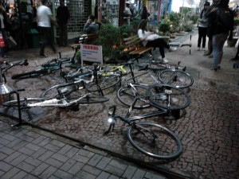
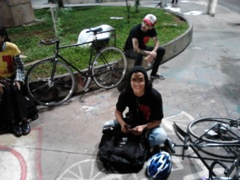
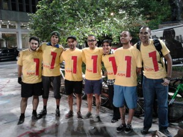

Como eu disse que faria no dia em que eu me acorvadei de participar do Night Ride, fui e cumpri o desafio da Primeira Hora do Rush – Alleycat. Não explicarei o que signifca. Deixarei que o relato se encarregue disto.
Mas que evento marcante. Um experiência inusitada mexe com nossos sentidos. Deixa-nos vivos e pulsantes.
Prova que aconteceu no dia 1º de junho, tendo como organizadora a loja spokes, onde aconteceu a largada. Aliás, foi a primeira de quatro, que acontecerão neste ano.
A prova estava prevista para acontecer as 19:00 horas, afinal, tinha de ser na “hora do rush”, mas caia uma chuva suficiente para fazer com que não tivesse quase ninguém lá na hora certa.
A loja fica numa galeria na Augusta, há duas quadras da Paulista.

A inscrição era feita na hora, com o Michel, responsável por rascunhar e executar tudo sozinho, a pedido da Spokes.

As provas de alleycat nasceram com os mensageiros pedalantes de roda fixa. Mas nesta prova eram bem-vindas quaisquer tipo de bicicletas. N foto, as primeiras bicicletas (fixas).

A prova consitia em 4 coletas e 4 entregas, em diferentes pontos da região central da cidade. Não existia ordem. O competidor era livre para cumprir os Checkpoints como bem lhe conviesse.
Essa foi a única explicação antes da largada.
A medida que chegavam mensageiros profissionais speedeiros e outras tantas fixas, um friozinho tomava conta da minha barriga. Mas a pauleira da Night Ride de dois dias antes me deixou com a auto-estima e atrevimento nas alturas. Nada me abalarira. Eu até participei da prova de calça jeans, copiando o visual da maioria (se arrependimento matasse, risos). Mochila era item obrigatório.
O oragnizador reuniu a galera e ordenou:
– As bicicletas serão colocadas deitadas na entrada da galeria e os competidores se alinharão na frene da loja.
Eu curtia cada instante, porque tudo ali era novo para mim.

E assim as bicicletas foram sendo “arrumadas” no chão e chegou as únicas duas mulheres que participaram da prova (detalhe é que havia premiação para as três primeiras colocações do masculinho e feminino)

Muita conversa e especulação a respeito da prova. Venceria quem reunisse boa noção de espaço, estratégia na escolha dos pontos, habilidade/insanidade no trânsito e por fim, velocidade. Eu não tinha um requisito que fosse, risos.
A última explicação foi que dada a largada era só correr para pegar a bilke, que a planilha da prova estaria na roda de cada bicicleta.
A largada foi dada e alguns correram. O gordo saiu de boa. Eu não olhei o relógio, mas passava das 20:00 horas. Eu peguei a planilha, desdobrei e, Deus do Céu: E agora?

Nas bolinhas vazias seriam colados os adesivos das respectivas apoiadoras da prova, como comprovação de passagem por cada checkpoint.
Eu não saibia o que fazer, olhava para os checkpoints e não vinha um raiozinho de ação, mas zozinho ali, na largada, decidi subir até a paulista e estudar com calma a planilha.
Estava eu lerdiando com a planilha na mão, quando o Michel, organizador, passou por mim e berrou: – Vamo Claudião, prá Praça do Ciclista, porra! Daí que a ficha caiu. Lá peguei a caixa, menor pouca coisa que uma de sapatos, enfiei na mochila e fui pro Vão do Masp.
Ali peguei um envelope e já sabia que meu próximo destinho seria a Catedral da Sé. Mas por qual caminho? Nessa hora o sangue já estava quente e o trânsito cheio. Fui tomado por um saudável desespero. Poderia ter contornado o Masp e pegado a Avenida Nove de Julho. Mas acabei indo pela Augusta.
Eu não devia escrever isto aqui, mas o tal desespero me fez pedalar feito louco, costurando os carros que seguiam no mesmo sentido que eu ia e quase ralando nos que subiam a pista contrária da Augusta. Isso sem falar no gordo pedalando feito doido pelo calçadão do centro. Subindo e descendo guias sem dó da bicicleta, nem do corpinho que se espatifaria com um tombo. Não estava certo. Mas… era o que tinha pra aquela hora: adrenalina total na veia!!!!!!!
Na catedral da Sé fiz a primeira entrega de envelope e voltei insandecido pelo calçadão. Jamais imaginei na minha vida eu pudesse rasgar a Barão de Itapetininga cheia de gente, de bicicleta. Por sorte nenhum guarda me “catou”.
No largo do Arouche, de frente a floricultura, peguei mais um envelope. Eu já tinha decidido que dali eu seguiria para o Estádio do Pacaembú. Debaixo do viaduto Costa e Silva, o minhocão, eu pedalava entre as duas faixas de carros. Ainda tinha gás e dei tudo que eu tinha de potência.
O raciocínio, contudo, me faltava, porque para não esperar nenhum farol pedalei metada da Avenida Pacaembu, na contramão e na calçada escura.
Entreguei o Envelope e já menos aluado segui forte para o Parque da Água Branca, satisfeito por lembrar de algum atalho.
Surpresa boa foi constatar que no mesmo local eu cumpria uma entrega e a última coleta, desta vez para ser entregue no Bairro de Pinheiros, precisamente na esqeuina da Teodoro Sampaio com a Henrique Shawman. Eu tinha de seguir pela Avenida Sumaré inteirinha. Cortando caminho pela Rua da PUC concluí o percurso da Avenida Sumaré sentido Henrique Shawman pedalando forte pela pista esclusiva dos motoqueiros. So fiz o que não se deve. Eu sei…
Ufa… eu entreguei a ultima carta. Mas a prova só terminava na Praça do Ciclista. Ainda tinha de subir a Avenida Rebouças inteirinha.
Não contem a ninguém mas até rabeta de caminhão eu peguei, por pouco tempo, lógico, o suficiente para tomar uma ar e seguir. Eu queria acelear mas não conseguia. Fui gemendo e fazendo força para vencer aquela subida desgraçada. Eu nunca pedalei assim de calça jeans ele colava nas pernas me sufocando.
O céu.
Que alegria arrebatadora eu senti quando avistei todos na Praça do Ciclista.
Eu fui o único Maricas a soltar um grito na chegada. Pudera. Eu estava em êxtase e recebi orgulhoso da vida cada cumprimento
Ah… eu merecia.
Conclui o desafio em 01h47min, exatamente UMA HORA depois do primeiro colocado.
Não fui o último porque o Japinha da foto teve um pneu furado durante a prova, trocou a câmera e ainda chegou logo depois de mim.

Cara gente finíssima. Da próxima ele não terá este azar.
Movimento da galera na Praça

Os campeões da prova. Com destaque para os dois primeiros, que não são mensageiros profissionais e correram de fixas. Destaque e aplauso maiores ainda ao terceiro colocado, de bermuda azul, que fez a prova com uma montain bike que parecia um monstro de descer montanha. Sabe Deus o que ele fez na cidade. Deve ter pulado viadutos inteiros… Chegou na frente dos mensageiros profissionais speedeiros.

A foto com os competidores, ou com o que sobrou deles, porque muitos já tinham ido embora.

O pessoal dos checkpoints, que se empenharam para a prova acontecer, alguns deles já tinham sido muito bacanas comigo, no Night Ride, cujas subidas eu demorava muuuuiito para vencê-las.

E finalmente, o momento estrela do gordo mais faceiro da prova. Orgulhoso, cansado e muito muito feliz por ter feito parte de tudo isso.

E pra encerrrar a noite maravilhosa de sexta-feira fomos alguns para um merecido e gigantesco lanche do Prime Dog.
Bão Tamém!!!!!!!!!!!!!!!!!!!!!!!!!!!!!!!!!!!!!!!!!!!!!!!!!!!!!!!!!!!!!!!!!


{kind=link}
{kind=link}
{kind=link}
{kind=link}
{kind=link}
{kind=link}
{kind=link}
{kind=link}
{kind=link}
{kind=link}